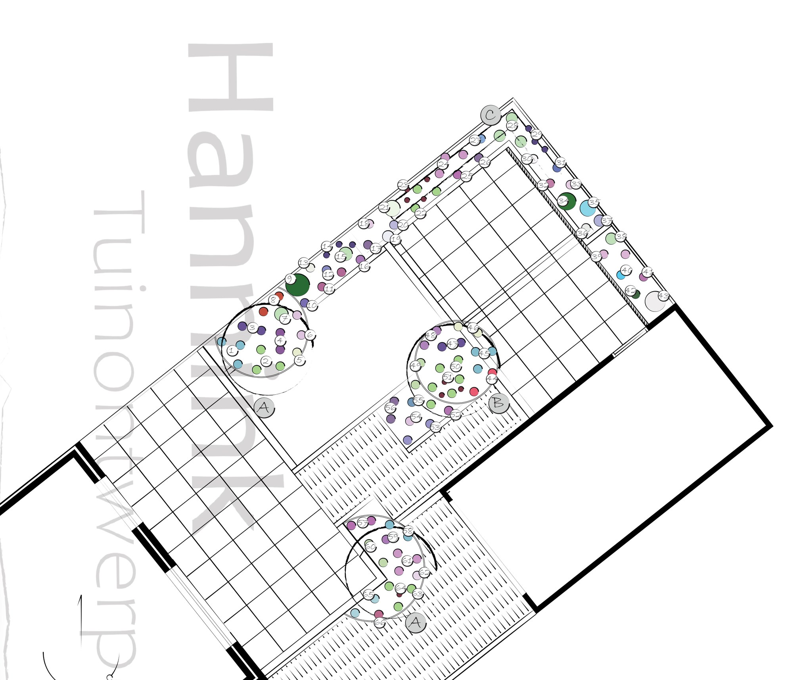

Tip: tik op een bolletje op mobiel om vast te zetten. Tik nogmaals om los te laten.
Hover over een bolletje voor de plant. Identieke planten worden in alle vakken gehighlight.

Tip: tik op een bolletje op mobiel om vast te zetten. Tik nogmaals om los te laten.